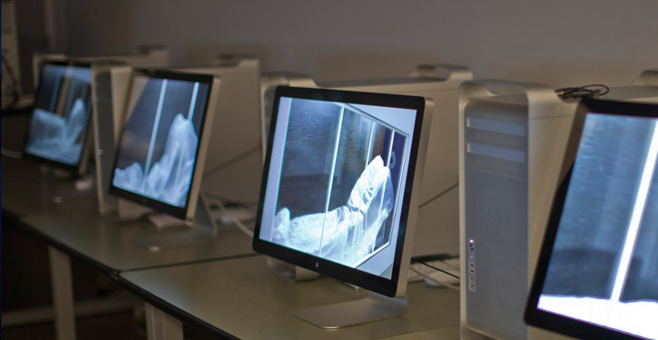

Borough of Manhattan Community College
Media Arts & Technology Departments

The Media Arts and Technology (MEA) Department provides a dynamic education in the fast growing field of digital
design and communication technology. From computer graphics to web design, and from programming for games and
animation to storytelling in HD video, the MEA department offers a variety of courses and concentrations focused on the
exciting future of media in the post digital age. MEA studies can lead students to positions in the film and television
industry, electronic journalism, web design and development, audiovisual production, advertising design, game design,
audio design, animation, and the entertainment industry.
Areas Of Concentrations:
Animation and Motion Graphics
Multimedia Programming and Design
Video Arts and Technology
Internships
All MEA students complete an internship, arranged through the college, at a professional media facility. Students earn an
Associate in Science (A.S.) degree and may transfer to a four-year college Learn about internships at BMCC.